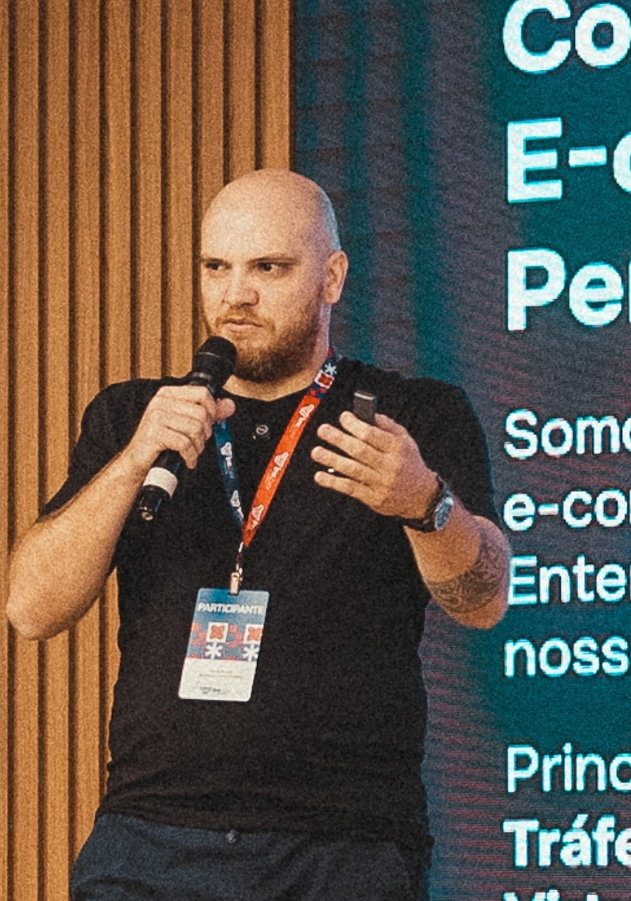
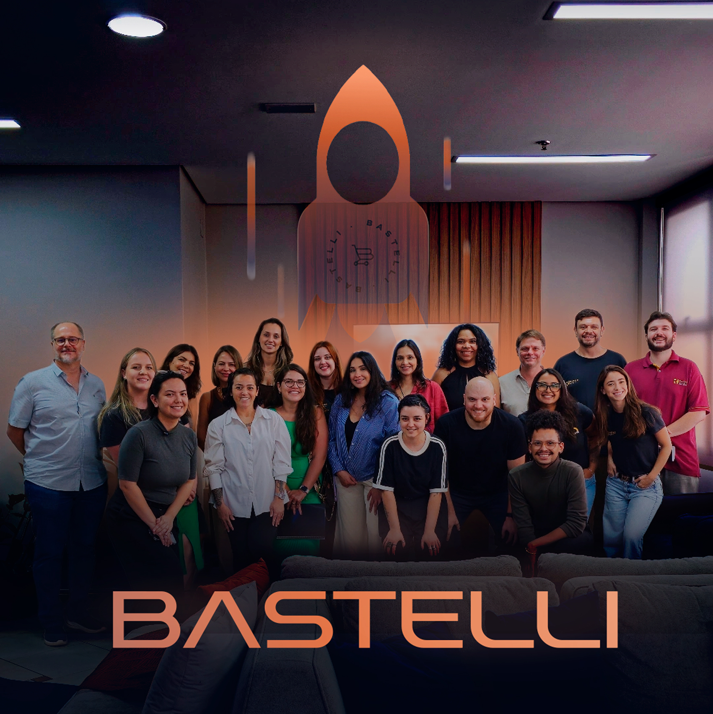

01 / GESTÃO DE TEMPO
Sua agenda a favor
do seu resultado.
Como sua mentalidade, postura e posicionamento podem ajudar a organizar a agenda, ter mais controle da rotina e cumprir o que realmente importa.
BASTELLI + RESOLVE · CONVITE EXCLUSIVO E GRATUITO
Gestão de tempo e vendas

Organize sua rotina, transforme seu atendimento e pare de perder vendas. Um encontro para empresários e gestores com Léo Nicoletto e Bruno Bastelli.
QUARTA-FEIRA · PRESENCIAL
Faltam poucos dias.
DOIS TEMAS QUE SE CONECTAM
O dia termina e ainda ficou muita coisa por fazer? Clientes esperando respostas e follow-ups adiados podem custar vendas. Vamos conversar sobre como mudar esse cenário.
01 / GESTÃO DE TEMPO
Como sua mentalidade, postura e posicionamento podem ajudar a organizar a agenda, ter mais controle da rotina e cumprir o que realmente importa.
BASTELLI CONSULTORIA
Atendimento e processos comerciais
02 / MUITO ALÉM DO CLIQUE
Como organizar o atendimento e estruturar processos comerciais para aproveitar as oportunidades que chegam pelo WhatsApp, sem perder vendas por falta de acompanhamento.
ENCONTROS JÁ REALIZADOS
Lucro, crescimento, vendas, marca e Black Friday já fizeram parte das nossas conversas. Conheça os encontros que já realizamos e os registros de quem esteve com a gente.
QUEM ESTEVE COM A GENTE
Conheça a experiência de empresários que estiveram nos nossos encontros.
Selecione um vídeo para assistir ao depoimento.
QUEM É A BASTELLI

A Bastelli é uma consultoria especializada em e-commerce. Trabalhamos ao lado dos lojistas, conectando planejamento, marketing e operação para identificar oportunidades e melhorar os resultados de cada negócio.
Nos nossos encontros, compartilhamos essa experiência com empresários de Limeira e região.
QUERO PARTICIPAR18 NOVEMBRO 2026 · QUARTA-FEIRA · 14H
Encontro gratuito no escritório da Bastelli, com Léo Nicoletto e Bruno Bastelli, coffee break e networking. Vagas limitadas para empresários e gestores.
QUERO PARTICIPAR